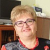

Дошкольное отделение школы № 1432
В 2015 году 16% первоклассников Школы № 1432 пришли из дошкольного отделения.
- улица Шолохова, 19
Воспитатели
Воспитатели, которых чаще всего благодарят родители (отзывы и профили сотрудников взяты с официального сайта школы):|
Воспитатель
Акимова Надежда Михайловна
5 благодарностей |
Воспитатель
Косолапова Елена Сергеевна
5 благодарностей |
Воспитатель
Вавилова Валентина Александровна
4 благодарности |
Воспитатель
Сафронова Екатерина Сергеевна
4 благодарности |
|
Воспитатель
Калинова Зоя Юрьевна
4 благодарности |
Воспитатель
Гольцева Галина Васильевна
4 благодарности |
 Козина Елена Алексеевна
Козина Елена Алексеевна
3 благодарности |
Воспитатель
Раздорских Галина Евгеньевна
3 благодарности |
|
Воспитатель
Салахудинова Людмила Павловна
3 благодарности |

Руководитель
Галкина Татьяна Николаевна
3 благодарности |
Воспитатель
Ефремова Ольга Алексеевна
2 благодарности |
Воспитатель
Широкова Наталья Александровна
2 благодарности |
|
Воспитатель
Мишина Елена Юрьевна
2 благодарности |
Воспитатель
Абрамова Светлана Александровна
2 благодарности |
Отзывы
Данные собраны c официального сайта школы и через форму для отзывов.
Добрый день!
Я мама Кузнецова Тимофея, воспитанника 12 группы дошколят.
Хочу выразить благодарность нашим воспитателям Галине Евгеньевне и Светлане Александровне и Наталье Валентиновне, отметить их высокий профессионализм, чуткое отношение к детям, заботу, внимание, доброту и теплоту.
Недавно у нас проходил праздник в честь дня мам, и для меня лично, это был неожиданный сюрприз. И когда они все успели - и выучить песенки, и стихи, частушки. Проводились конкурсы среди мам как физические так и интеллектуальные, а самое главное, был контакт с детьми, было весело смотреть как они переживали каждый за свою мамочку)))
А после праздника было чаепитие, где мы все вместе попили чай, и поели вкусную выпечку.
Мы полностью доверяем нашим воспитателям, ведь оставляя наших деток практически на весь день, родителю очень важно знать, что его чадо в надежных руках. И мы спокойны за жизнь и безопасность наших деток. Ведь рядом с ними настоящая команда из трех профессионалов.
Мы очень им благодарны и говорим: «СПАСИБО! НАМ ОЧЕНЬ С ВАМИ ПОВЕЗЛО!» Уважаемые наши Галина Евгеньевна, Светлана Александровна, Наталья Валентиновна!
Я мама Кузнецова Тимофея, воспитанника 12 группы дошколят.
Хочу выразить благодарность нашим воспитателям Галине Евгеньевне и Светлане Александровне и Наталье Валентиновне, отметить их высокий профессионализм, чуткое отношение к детям, заботу, внимание, доброту и теплоту.
Недавно у нас проходил праздник в честь дня мам, и для меня лично, это был неожиданный сюрприз. И когда они все успели - и выучить песенки, и стихи, частушки. Проводились конкурсы среди мам как физические так и интеллектуальные, а самое главное, был контакт с детьми, было весело смотреть как они переживали каждый за свою мамочку)))
А после праздника было чаепитие, где мы все вместе попили чай, и поели вкусную выпечку.
Мы полностью доверяем нашим воспитателям, ведь оставляя наших деток практически на весь день, родителю очень важно знать, что его чадо в надежных руках. И мы спокойны за жизнь и безопасность наших деток. Ведь рядом с ними настоящая команда из трех профессионалов.
Мы очень им благодарны и говорим: «СПАСИБО! НАМ ОЧЕНЬ С ВАМИ ПОВЕЗЛО!» Уважаемые наши Галина Евгеньевна, Светлана Александровна, Наталья Валентиновна!
Кажется, что совсем недавно мы пришли в детский сад...И вот - выпускники, осенью в первый класс! Хочется выразить благодарность всему педагогическому составу нашего замечательного сада,развивающемуся под чутким руководством Галкиной Татьяны Николаевны. Коллективу, который развивал, обучал, вкладывал столько сил и любви в наших деток! Поблагодарить за годы терпения, труда и отзывчивости наших необыкновенных воспитателей группы №7 "Звездочки" Валентину Александровну, Галину Васильевну и няню Елену Алексеевну. Вы - кладовая идей и игр. Веселые утренники, интересные творческие занятия и подготовка к школе – все это, несомненно, заслуга наших воспитателей, их опыта, старания и высокого профессионализма. Мы прощаемся, но не забудем этот чудесный период детства, который навсегда оставит самые приятные воспоминания. Огромное спасибо за все!
С уважением , Александра.
С уважением , Александра.
Садик №1432 (Дошкольное отделение «Новой Школы») стал вторым домом для двух моих дочерей Ашарчук Анны (12 группа) и Ашарчук Софьи (5 группа).
Наша Сонечка очень привязалась к своим воспитателям Ольшевской Марине Алексеевне,
Широковой Наталье Александровне и нянечке Галкиной Татьяне Семеновне. Сонечка и воспитатели понимают, в прямом смысле, друг друга без слов. Даже вечером Сонечку стараемся забрать попозже, чтобы успела наиграться, иначе, если прийти пораньше, ни в какую не хочет уходить домой – а это, пожалуй, лучшая оценка ребенком работы воспитателей и нянечки. Благодарю Вас за внимание и заботу о нашей Сонечке.
Также, хотелось бы сказать несколько положительных и добрых слов о воспитателях моей старшей дочери Анечки - Раздорских Галине Евгеньевне и Ольге Игоревне. Мы очень переживали, что при переходе в новую (12-ю) группу ребенок не сможет прижиться в новом детском и преподавательском коллективе. Однако, уже через неделю все наши опасения развеялись. Заботливые и мудрые преподаватели создали лучшие условия для адаптации ребенка на новом месте и теперь Анечка в новой группе чувствует себя также хорошо как в и в предыдущей 11-й группе (воспитатель Геворгян Армине Нориковна, ей отдельное спасибо). Также, отмечу работу преподавателей 12-й группы - каждый день ребенок из садика приносит плоды своего творчества: аппликации, рисунки, раскраски, поделки и т.п. Даже удивляюсь, когда в этой ежедневной кутерьме с большим количеством детей воспитатели находят время на такое большое количество занятий с нашими детьми.
На сегодняшний день, по моему мнению, садик №1432 стал лучшим садиком нашего района Ново-Переделкино, в чем немаловажная заслуга его руководителя - Галкиной Татьяны Николаевны. Уже из-за периметра садика (из-за забора) становится понятно что это садик отличается от других, - чистотой и убранством внутренней территории, современными и безопасными игровыми площадками и т.п. Ну а попав внутрь садика ты понимаешь, что первое впечатление тебя не обманули.
Надеюсь, что садик №1432 и мои дочери будут еще долго радовать друг-друга. Спасибо Вам!
Наша Сонечка очень привязалась к своим воспитателям Ольшевской Марине Алексеевне,
Широковой Наталье Александровне и нянечке Галкиной Татьяне Семеновне. Сонечка и воспитатели понимают, в прямом смысле, друг друга без слов. Даже вечером Сонечку стараемся забрать попозже, чтобы успела наиграться, иначе, если прийти пораньше, ни в какую не хочет уходить домой – а это, пожалуй, лучшая оценка ребенком работы воспитателей и нянечки. Благодарю Вас за внимание и заботу о нашей Сонечке.
Также, хотелось бы сказать несколько положительных и добрых слов о воспитателях моей старшей дочери Анечки - Раздорских Галине Евгеньевне и Ольге Игоревне. Мы очень переживали, что при переходе в новую (12-ю) группу ребенок не сможет прижиться в новом детском и преподавательском коллективе. Однако, уже через неделю все наши опасения развеялись. Заботливые и мудрые преподаватели создали лучшие условия для адаптации ребенка на новом месте и теперь Анечка в новой группе чувствует себя также хорошо как в и в предыдущей 11-й группе (воспитатель Геворгян Армине Нориковна, ей отдельное спасибо). Также, отмечу работу преподавателей 12-й группы - каждый день ребенок из садика приносит плоды своего творчества: аппликации, рисунки, раскраски, поделки и т.п. Даже удивляюсь, когда в этой ежедневной кутерьме с большим количеством детей воспитатели находят время на такое большое количество занятий с нашими детьми.
На сегодняшний день, по моему мнению, садик №1432 стал лучшим садиком нашего района Ново-Переделкино, в чем немаловажная заслуга его руководителя - Галкиной Татьяны Николаевны. Уже из-за периметра садика (из-за забора) становится понятно что это садик отличается от других, - чистотой и убранством внутренней территории, современными и безопасными игровыми площадками и т.п. Ну а попав внутрь садика ты понимаешь, что первое впечатление тебя не обманули.
Надеюсь, что садик №1432 и мои дочери будут еще долго радовать друг-друга. Спасибо Вам!
Огромная благодарность и низкий поклон воспитателям группы 4 карапузики! Надежда Васильевна супер профессионал своего дела. Очень мудрый, справедливый и безумно добрый воспитатель. Лидия Николаевна младший воспитатель очень положительный человек. Детки всегда аккуратные, всегда сытые, чистые. Мой ребенок ее любит и всегда рассказывает, как она ему помогала одеваться и кушать. Елена Сергеевна очень добрый воспитатель, отзывчивый. Детки ее обожают. С детками всегда занимаются, многому учат. Воспитатели всегда рассказывают как прошел день. Ни когда ни каких замечаний по поводу ребенка не говорили. Только положительные отзывы. Ребенок с большим удовольствием идет в сад, а дома только и говорит о своих воспитателях. Доверяешь таким людям на 100 процентов. Совсем не хочется с ними расставаться. Надежда Васильевна, Елена Сергеевна и Лидия Николаевна - огромное вам спасибо!!!! Вы лучшие!! Останетесь с нами!
Хочу выразить огромную благодарность детскому саду №1432 .Каждое утро в детском саду,нашего ребенка ждет теплая,уютная обстановка .При входе в группу нас встречает заботливая и внимательная воспитательница ,которая всегда вежлива и приветлива.Спасибо Акимовой Надежде Михайловне - творческий работающий,хорошо знающий психологию детей,воспитатель и настоящий педагог.Спасибо огромное Екатерине Сергеевне ,к детям относится с большой заботой и пониманием.Старается найти индивидуальный подход в воспитании и обучении каждого ребенка, огромное трудолюбие любовь к своей профессии.В раздевалке группы всегда вывешиваются работы наших детей,выставляются детские поделки.Дети получают необходимые знания и развитие .Спасибо большое Галине Григорьевне за ее труд и терпение, за доброту и понимание наших детей мы ее очень уважаем и любим.За время пребывания в садике у моего ребенка расширился кругозор.появилось желание учиться чему то.Она стала гораздо увереннее в себе, у моей дочки Амины появилось много новых друзей , что необходимо ребенку.Хочу поблагодарить всех ,за то,что смогли создать в группе дружный детский коллектив.И хочется сказать им большое спасибо !!!
Хочу поблагодарить воспитателей и помощника воспитателя нашей любимой группы № 6 "Колокольчики"! Первый год в детском саду - самый сложный период для любого ребёнка, и благодаря фантастической чуткости, спокойствию и терпению самых главных людей в садике для ребенка, моя дочь с лёгкостью пережила этот важный этап! В первый же свой день она не захотела уходить домой после обеда и осталась на дневной сон. Думаю, тот факт, что маленький человечек с утра радостно бежит в группу и не хочет опоздать на зарядку - является самой серьёзной и важной оценкой работы любого воспитателя! А для родителя - отсутствие слёз, страхов и нежелания идти в детский сад.
Ольга Алексеевна, Елена Юрьевна и Римма Борисовна, спасибо вам большое за вашу заботу и доброту к нашим детям. Они очень многому научились за свой первый, самый трудный год только благодаря вам!
Отдельное спасибо руководству детского сада № 1432 за чёткую работу, соблюдение всех норм и прекрасные утренники, в которых участвуют наши дети!
Ольга Алексеевна, Елена Юрьевна и Римма Борисовна, спасибо вам большое за вашу заботу и доброту к нашим детям. Они очень многому научились за свой первый, самый трудный год только благодаря вам!
Отдельное спасибо руководству детского сада № 1432 за чёткую работу, соблюдение всех норм и прекрасные утренники, в которых участвуют наши дети!
Выражаю свою благодарность воспитателям детского сада группы №3 «Солнышко» Зое Юрьевне,Елене Павловне ,нянечке Галине Ивановне за нелегкий труд в воспитании наших малышей,за чуткость,доброту,отзывчивость,да и просто за человеческое отношение!СПАСИБО!!!.
Семья Парусниковых выражает благодарность воспитателям Зое Юрьевне и Людмиле Павловне, младшему воспитателю Галине Ивановне, работающим в группе №3 "Солнышко". Благодарим за чуткое отношение к детям, компетентность, творческий подход , заботу и внимание к индивидуальности каждого ребенка..Воспитатели смогли создать в группе теплую, комфортную обстановку, поэтому дети с радостью ходят в детский сад.
Дети живут в саду интересной, насыщенной жизнью. Воспитатели проводят большую работу по развитию речи и ознакомлению с окружающим миром (разучивают с ними песни, стихи, пальчиковые игры, много читают им книг, работают с сюжетними картинками, карточками, знакомят с ролевыми играми ), по физическому развитию (проводят различные зарядки, разминки, активные игры), по развитию мелкой моторики ( дидактические игры, пальчиковый театр, ИЗО и т.п.). Дочка дома взахлеб рассказывает о том, чем они занимались в группе, это говорит о том, что ей там интересно. Большое внимаюние воспитатели уделяют развитию навыков самообслуживания, самостоятельности, знакомят детей общепринятым в социуме нормами поведения, учат ребятишек взаимодействовать со взрослыми и друг с другом, дружить. У нашей дочки Сони появились в группе друзья и даже одна близкая подруга.
Особенно хочется отметить то, что воспитатели работают слаженно друг с другом: к детям предьявляются единые требования, работу, начатую одним воспитателем продолжает другой, они не делят работу на "твою" и "мою", младший воспитатель активно помогает воспитателям.
Мы доверяем нашим воспитателям, ведь, оставляя ребенка на полный день в детском саду, родителям важно знать, что их ребенок в надежных и заботливых руках.
Дети живут в саду интересной, насыщенной жизнью. Воспитатели проводят большую работу по развитию речи и ознакомлению с окружающим миром (разучивают с ними песни, стихи, пальчиковые игры, много читают им книг, работают с сюжетними картинками, карточками, знакомят с ролевыми играми ), по физическому развитию (проводят различные зарядки, разминки, активные игры), по развитию мелкой моторики ( дидактические игры, пальчиковый театр, ИЗО и т.п.). Дочка дома взахлеб рассказывает о том, чем они занимались в группе, это говорит о том, что ей там интересно. Большое внимаюние воспитатели уделяют развитию навыков самообслуживания, самостоятельности, знакомят детей общепринятым в социуме нормами поведения, учат ребятишек взаимодействовать со взрослыми и друг с другом, дружить. У нашей дочки Сони появились в группе друзья и даже одна близкая подруга.
Особенно хочется отметить то, что воспитатели работают слаженно друг с другом: к детям предьявляются единые требования, работу, начатую одним воспитателем продолжает другой, они не делят работу на "твою" и "мою", младший воспитатель активно помогает воспитателям.
Мы доверяем нашим воспитателям, ведь, оставляя ребенка на полный день в детском саду, родителям важно знать, что их ребенок в надежных и заботливых руках.
Если вы нашли ошибку или неточность, пожалуйста, сообщите нам об этом.
Ученик, выпускник или родитель? Оставьте отзыв о детском саде.